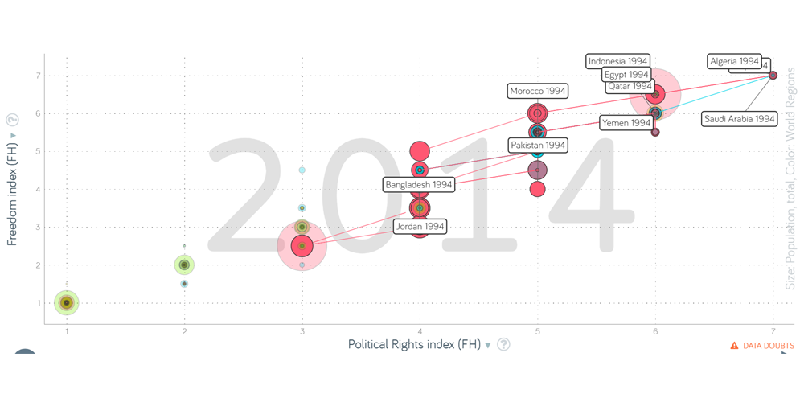

Main questions
What is the most important quality of a child for each country?
Can I compare the qualities of a country through the years?
Waves
The website allows me to select a period to view data from a wave.
Countries

I want to select all the countries but the tool does not allow me to do it in one step.
I would like to visualize all the countries in one view.
Survey variables

I would like to select all this variables.
Responses
I can compare countries on one variable but I am aiming at comparing all the variables
of a selected country.
Map

I can compare countries but only based on one variable.
My Visualization
To improve this visualization, I would create a single map that aggregates all the variables (9) letting the users grasp which is the most important quality (AVG 20 years) in each country (98). For the second question, a parallel coordinates chart will show the variables of the selected country, through the waves, to compare them and see what is the trend for each wave. insert_chartHave a look at my vizGapminder
Now that I answered my two questions I look in Gapminder and take into account some variables to
analyze correlations based on: (read axes names).
We can notice that coutries that consider religious faith the best quality in a child have
students that spend between 2 and 10 years studying, for women is even less.

Looking for correlations with civil liberties and political rights we can notice that these countries have a freedom index (AVG of the two variables) from 7 to 3 (Indonesia in 2012) and Some of them did not change through the years, like Saudi Arabia.
Taking into account the human development index, all the countries grew from 1995 to 2014 and the countries have many different values that let me think that there is any correlation.
For the last variables, i considered the employement rate. I can spot a lot of
fluctuation, expecially regardin Quatar but, overall, I can't find any correlation but many
differences beetween genders.
Learning
From these discovery processes, I can understand trends of child's qualities among the countries with a
focus on particular variables.
Moreover, I compared religious faith' trends with different variables of Gapminder to grasp correlations.
One example of correlation is that those countries have a low freedom index.
These two discovery processes gave me the opportunity to spend the time to analyze and understand how to
read and extract the right data to create a new solution capable of answering my questions.